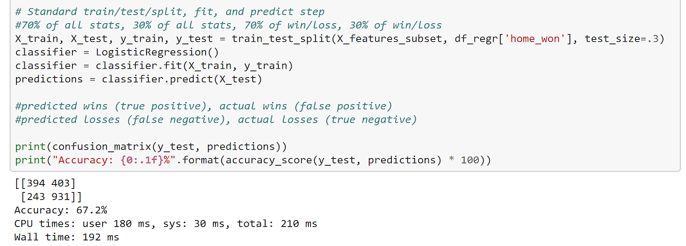

Overview and Goals

For this project, I aimed to create a program that could predict the winner of an NBA game based off a variety of team and player statistics leading up to each game. My baseline goal for the model was to have more than 50% accuracy -- essentially, I wanted a model that was better than flipping a coin. However, I knew that NBA home teams win about 60% of their games, so my secondary goal was to create a model more effective than just picking the home team to win every time. After those two goals, I wanted to keep tinkering with featuring engineering and testing out different types of models and hyperparameters to achieve the best possible result in the timeframe for the project. I'll break down my work in this report, and you can follow along with my github repo here:
https://github.com/jdelano18/nba.
Data
I used several datasets for this project. The main data sources came from someone who used Jae Bradley's repo
(https://github.com/jaebradley/basketball_reference_web_scraper)
that scraped
https://www.basketball-reference.com/
, a website that aggregates and stores all sorts of NBA statistics. Using this repo, three datasets were created: 2012-2017 box scores, 2012-2017 schedules, and 2012-2017 season player stats.
The box scores dataset recorded information about each player's statistics from every game.
The schedules dataset recorded the date, score, and home/away team from every game.
The season player stats dataset recorded the season end statistics for each player. Since I was originally interested in using players' stats leading up to games rather than the year end totals, I never ended up using this dataset.
Finally, I found a .json file with both NBA teams' names and abbreviations since I needed to standardize the type way teams were identified between the box scores and schedules datasets.
Methodology
I used the get_starters,
get_previous_wins,
and get_player_to_date_stats
methods to gather and create parameters to feed into my models. The get_starters
method returns names of 5 players with the most playing time on each team for any game from the box scores dataset. The get_previous_wins
method returns a slew of different parameters from the schedules dataset. I started with features looking at winning and losing streaks as well as a team's success versus another team during a season's series. However, I ended up creating other parameters like home and away winning percentages and various statistics about points scored and given up. Finally, the get_player_to_date_stats
method returns various statistics (like rebounds, assists, three point percentage, etc.) from a specific game. I used the players returned from the get_starters method as inputs into this method.
For all the games in the schedules dataset, I aggregated about 30 different parameters in the game_dict dictionary. I converted this data type into a pandas dataframe, so I could use various scikit learn classification models.
The code for this part of the process is actually quite simple. The model can be created simply by feeding in the testing and training data as an array-like object. I fed in all the features I created in this first round, and created a variable called 'home_won' as my target variable. My first model was scikit learn's DecisionTreeClassifier. I'm not exactly sure how each model works, but I chose it because it's the simplest classification technique where, each time it receives an answer, a follow up question is asked of the model:
The model returns its results as a confusion matrix. In this case, the top left value represents the times when the home team lost, and the model correctly predicted that the home team lost. The top right value represents the times when the home team lost, but the model incorrectly predicted that the home team won. The bottom left value represents the times when the home team won, but the model incorrectly picked that the home team lost. Finally, the bottom right value represents the times when the home team won, and the model correctly predicted that the home team won.
However, this confusion matrix also supports the fact that home teams win 58% of the time. In other words, if I simply picked that the home team would win every time, I would have made a better model.
Hoping to improve my accuracy score, I looked into all the different hyperparameters that a DecisionTreeClassifier can take in. I was overwhelmed by all the options for the hyperparameters, and, frankly, I didn't know what a lot of them meant. So I used this parameter estimator called GridSearchCV, a scikit learn function. The grid search method takes in scikit-learn model, a dictionary of parameters, and the number of cross-validation attempts. It simulates the DecisionTreeClassifier with every possible permutation of the parameters entered and finds the best combination.
This new DecisionTreeClassifier now had a 65.2% accuracy. This change turned out to be the single biggest improvement to my model. I spend the next week and a half feature engineering, creating and removing various statistics that fed into the model. However, all this work only made my model about .4% more accurate. I'll get into this more in the results section.
Finally, I just tried to use different classification techniques besides the DecisionTreeClassifier. The best results came from using the LogisticRegression model (I also tried RandomForestClassifier and AdaBoostClassifier). This immediately produced between 66%-69% accuracy when I ran it multiple times. I tried running GridSearchCV for the different hyperparameters for LogisticRegresssion; however, this classification method had many incompatible combinations where certain hyperparameters couldn't exist when others were inputted into the model.

Results
My very first model used features that related to the momentum of a particular team. I looked at how a team faired to another team for the whole season, and how that team had performed in the previous games. My next iteration of new parameters added a lot of player statistics, such as the points per game, assists per game, and rebounds per game. However, many of these parameters held little to no importance to the model and could be dropped out. I then came up with other statistics to predict the games. I added up to 30 features at one point, and my most accurate model used the following features:
I'm not exactly sure why certain player statistics eventually had to be dropped out of the model, but results seem almost trivial. The most important parameter to the model was a variable called 'win_percent_difference_home' (a bit of a misnomer that I forgot to correct). This was simply the home team's total winning percentage minus the away team's winning percentage.
The confusion matrix for the best model is also interesting. The model got better at predicting when the home team would win (bottom row) -- in fact, it was correct 79.3% of the time for home wins. However, it could only predict 49.4% of losses correctly (top row).
Oppurtunities for Future Improvements
I have 2 main improvements in mind for making this model better. The first is through feature engineering. There were several features that I couldn't make in time for this project. I was working on calculating a feature to measure whether or not a team had a back to back, but, at the eleventh hour for this project, it was still not working and I had to move on. I was really close, and I was looking to add: home team playing back to back at home, home team playing back to back and last night away, away team playing back to back and last night away, and away team playing back to back and last night home. I'll explain more about this in my extension. Additionally, I'd like to find some data tracking player injuries and use that in the model.
The second improvement would be to implement the ensemble voting method. This method takes several classifiers as inputs, runs all of them, and creates a prediction based off the most number of votes for an event. For example, if the DecisionTreeClassifier and LogisticRegression models both predicted a certain game would be won by the home team but the AdaBoostClassifier predicted they would lose, the ensemble model would predict a win. Each model casts a vote, and the ensemble method tallies the votes and creates a prediction based off the combined results of several models. See more about the power of this method in the extension section.